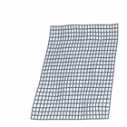

Geometry-Aware Network for Non-Rigid Shape Prediction from a Single View

We propose a method for predicting the 3D shape of a deformable surface from a single view. By contrast with previous approaches, we do not need a pre-registered template of the surface, and our method is robust to the lack of texture and partial occlusions. At the core of our approach is a {\it geometry-aware} deep architecture that tackles the problem as usually done in analytic solutions: first perform 2D detection of the mesh and then estimate a 3D shape that is geometrically consistent with the image. We train this architecture in an end-to-end manner using a large dataset of synthetic renderings of shapes under different levels of deformation, material properties, textures and lighting conditions. We evaluate our approach on a test split of this dataset and available real benchmarks, consistently improving state-of-the-art solutions with a significantly lower computational time.

We have devised an architecture with three branches, each responsible of reasoning about a different geometric aspect of the problem. The first two branches are arranged in parallel and perform probabilistic 2D detection of the mesh in the image plane and depth estimation (red and green regions in the figure, respectively). These two branches are then merged (blue region in the figure) in order to lift the 2D detections to 3D space, such that the estimated surface correctly re-projects onto the input image and it is properly aligned with the ground truth shape. In the results section we will show that reasoning in such a structured way provides much better results than trying to directly regress the shape from the input image, despite using considerably deeper networks.
BibTex
@inproceedings{pumarola2018geometry,
title={{Geometry-Aware Network for Non-Rigid Shape Prediction from a Single View}},
author={A. Pumarola and A. Agudo and L. Porzi and A. Sanfeliu and V. Lepetit and F. Moreno-Noguer},
booktitle={CVPR},
year={2018}
}
Publications
2018
-

- Geometry-Aware Network for Non-Rigid Shape Prediction from a Single View
- A. Pumarola, A. Agudo, L. Porzi, A. Sanfeliu, V. Lepetit and F. Moreno-Noguer
- Conference in Computer Vision and Pattern Recognition (CVPR), 2018.
-
Acknowledgments
This work has been partially supported by the Spanish Ministry of Science and Innovation under projects HuMoUR TIN2017-90086-R and ColRobTransp DPI2016-78957; by the European project AEROARMS (H2020-ICT-2014-1-644271); by a Google faculty award; and by the Spanish State Research Agency through the Mar\'ia de Maeztu Seal of Excellence to IRI MDM-2016-0656.